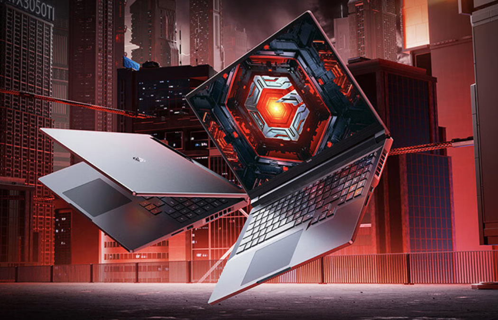
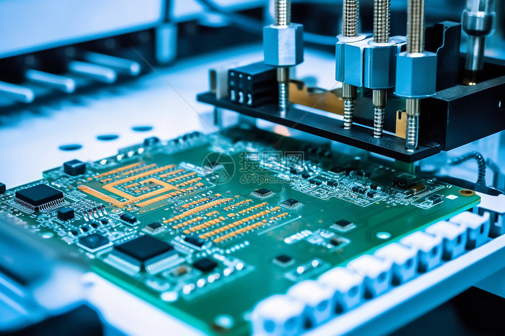

今日要闻
1.量子计算机取得突破性进展
这次中国自主量子计算机“本源悟空”全球首次运行十亿级AI微调大模 型,标志着国内已经开始通过量子-经典混合框架,将大模型参数优化 转化为量子退火问题,实现量子计算机对AI大模型任务的协助。
这将有助于国产AI大模型的技术落地。同时,由于量子计算机的算力优 势,一旦相关的技术壁垒被攻克,国产算力的发展将不再受制于美西方 的芯片管制措施。除此之外,量子计算还会优先处理高维参数优化、注 意力机制等计算密集型任务,与经典算力形成互补。
结合国内现有的AI芯片产业,两者就可以发挥出1+1大于2的能力。但就 目前而言,国用量子计算机在商用领域仍需要解决诸多问题。比如,需 将量子比特数从72提升至千级规模,同时将量子门保真度从99.5%提高 至99.99%,涉及超导材料、误差校正等关键技术攻关。
量子计算需与经典体系深度耦合,推动编译器、开发工具链等生态成 熟,降低应用门槛等。但就目前而言,国内在量子计算机领域的确已经 开始领先全球,叠加美方近段时间的关税措施,其综合研发实力已经大 不如之前。
2.AI辅助诊断准确率图片95%
近日,美国科技公司DeepHealth宣布,其研发的AI医疗诊断系统在乳 腺癌筛查中的准确率超过95%,远超人类医生的平均水平。该系统通过 深度学习技术,能够快速分析医学影像,识别早期癌症病变,并提供诊 断建议。
目前,DeepHealth的AI系统已在美国多家医院试点应用,未来有望在 全球范围内推广。专家表示,AI技术的引入将极大提高医疗诊断的效率 和准确性,为患者带来更好的治疗效果。
3.行业数据
| 领域 | 投资额(亿美元) | 增长率 |
|---|---|---|
| 人工智能 | 580 | +42% |
| 量子计算 | 120 | +215% |
| 生物科技 | 80 | 120% |
| 机器人 | 100 | 150% |
| vr | 20 | 100% |
| 自动驾驶 | 10 | 120% |